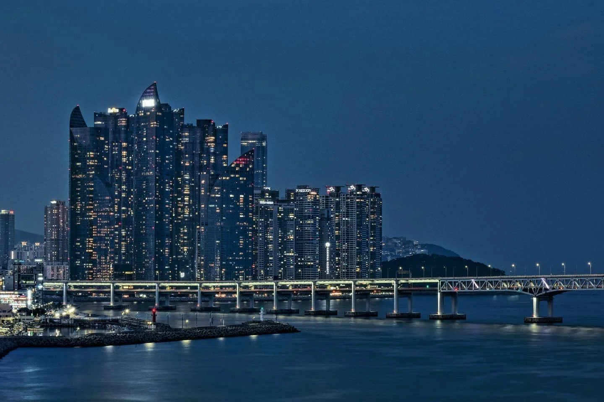
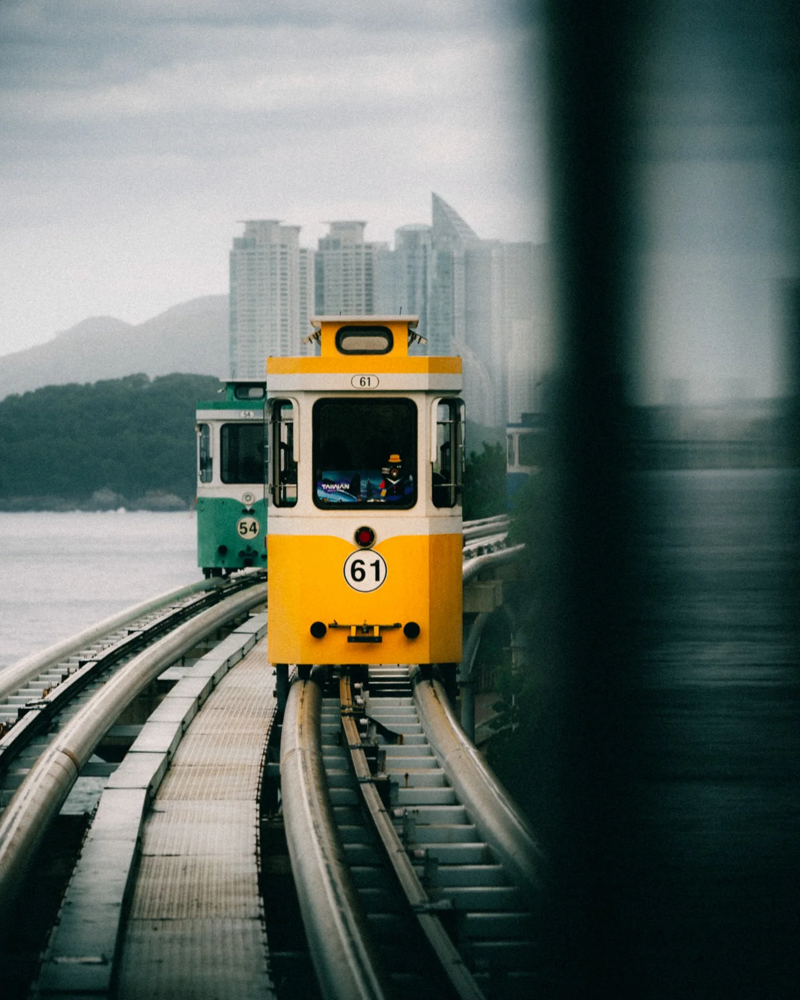
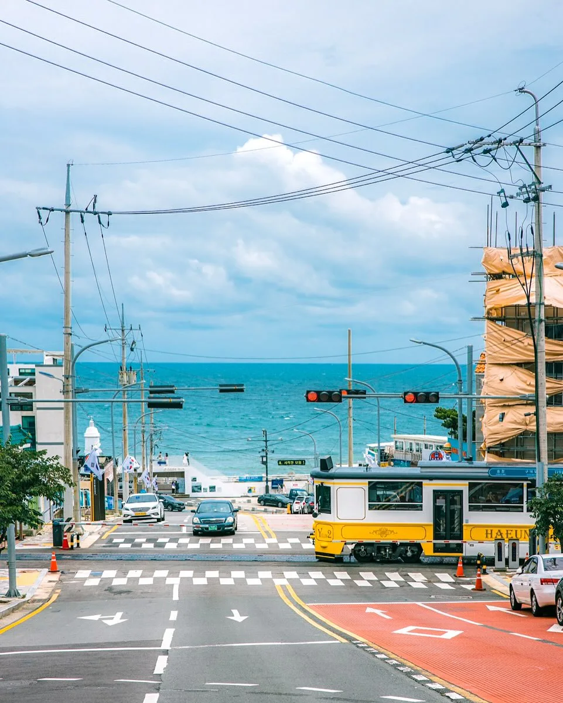
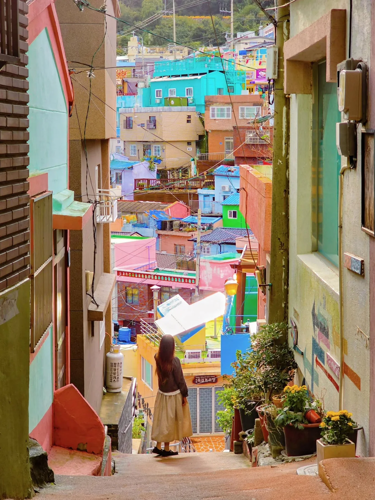

Arrival
도시의 첫 장면으로 들어선다.

Saved Scenes of Busan









Why Busan Became a Design Capital
- Capital
- Open
- Civic
- Care
- Renew
- Link
- Culture
- Coast
- Global
- Life
- Pastel
- Line

Busan
Syndrome
다시 부산이 그리워지는 순간
Mood
Routes
해운대 · 광안리 · 남포동 · 서면
PASTEL
SEA
광안리의 바다는 도시를 부드러운 색으로 기억하게 만든다.
MOVING
SEA
이동하는 풍경 속에서 부산은 계속 다시 보인다.
NIGHT
SIGNAL
밤의 신호들이 도시의 장면을 다시 켠다.
Archive
저장된 부산의 장면들